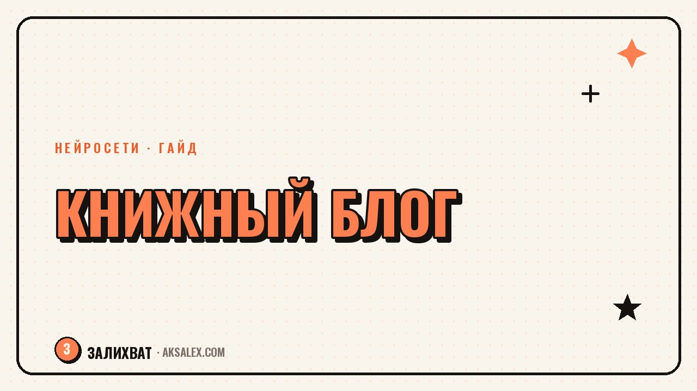

Как вести книжный блог с нейросетями

Книжный блог держится на регулярности: подписчики ждут рецензии на свежие книги, подборки по настроению и красивые карточки с цитатами. Проблема в том, что на чтение одной книги уходит несколько дней, а контент нужен постоянно. Нейросети не читают книги за тебя, но берут на себя оформление, структуру рецензии и рутинные карточки, оставляя время на главное - собственное мнение о тексте.
Что нейросеть может и не может в книжном блоге
Нейросеть не заменит прочитанную книгу: пересказ по аннотации сразу чувствуется и подрывает доверие читателей, которые сами держали книгу в руках. Зато она отлично помогает со вторичными задачами - структурировать твои заметки по ходу чтения в связный текст, предложить заголовок рецензии или собрать подборку книг по теме, которую ты уже читал.
Где ИИ реально экономит время
- Сборка рецензии из разрозненных заметок, сделанных во время чтения
- Карточки с цитатами и обложками под единый визуальный стиль
- Подборки книг по жанру, настроению или теме для сторис
- Короткие описания книг для анонсов и сторис-опросов
Я перестала бояться пустой страницы после книги. Диктую впечатления голосом сразу после последней главы, а структуру рецензии потом помогает собрать нейросеть.
Как собрать рецензию без ощущения конвейера
Рабочая схема - вести заметки прямо во время чтения: реакция на сюжетный поворот, цитата, которая зацепила, вопрос без ответа. После книги эти заметки превращаются в рецензию за 20-30 минут, если попросить нейросеть предложить структуру: о чём книга без спойлеров, что понравилось, кому подойдёт, одна спорная деталь.
Важно не отдавать ИИ финальную оценку и вывод - личное мнение читатели ценят больше жанровой справки, а живые формулировки лучше оставлять своими.
Карточки, обложки и визуал для буктока
В буктоке и книжных сторис визуал решает многое: красивая карточка с цитатой расходится по репостам гораздо чаще скучного текстового поста. Нейросети для генерации изображений удобны для фоновых иллюстраций к цитатам, когда не хочется использовать чужие фото обложек без разрешения.
| Задача | Инструмент | Что получаешь | Время |
|---|---|---|---|
| Карточка с цитатой | Canva + ИИ-фон | Готовый пост под твой стиль | 5-10 минут |
| Структура рецензии | ChatGPT или Claude | Черновой план текста | 10-15 минут |
| Подборка книг | Claude | Список с короткими описаниями | 10 минут |
| Озвучка рецензии для видео | Сервис синтеза речи | Аудиотрек под монтаж | 15-20 минут |
Контент-план для книжного блога
Книжный блог легко держать на простом ритме: одна полноценная рецензия в неделю, две-три карточки с цитатами и одна подборка по теме. Нейросеть помогает заранее собрать идеи подборок на месяц - например, книги с неожиданным финалом, книги меньше 200 страниц, книги для долгой дороги.
Форматы, которые заходят у книжных блогеров
- Рецензия без спойлеров с чёткой рекомендацией «кому подойдёт»
- Разбор одной сильной цитаты с личным комментарием
- Подборка книг по настроению или жизненной ситуации
- Сравнение книги и её экранизации
Частые ошибки в книжном блоге с ИИ
Главная ошибка - просить нейросеть написать рецензию по описанию книги без твоего реального мнения. Читатели книжных блогов обычно сами хорошо знают жанр и быстро замечают пересказ без личной интонации. Вторая ошибка - штамповать однотипные карточки с цитатами без привязки к рецензии: подписчики перестают кликать на пост целиком.
Третья ошибка - гнаться за количеством прочитанных книг в месяц ради контента. Книжный блог живёт доверием: одна честная рецензия ценнее трёх поверхностных. Нейросеть ускоряет оформление, но не должна ускорять само чтение в ущерб вниманию к тексту.
Частые вопросы
Можно ли писать рецензии на книги, которые до конца не дочитал?
Технически можно, но это быстро подрывает доверие, если читатели заметят незнание финала или ключевого поворота. Честнее отмечать в посте, что книга дочитана не до конца, либо писать не рецензию, а первые впечатления.
Как нейросеть поможет с описанием книги без спойлеров?
Можно попросить её выделить из твоих заметок только завязку и общее настроение, убрав детали сюжета после середины книги. Финальную проверку на спойлеры всё равно стоит делать самому, потому что ИИ не всегда понимает, что именно считается спойлером в конкретном жанре.
Стоит ли использовать чужие фото обложек книг в постах?
Безопаснее делать собственные фото или простые ИИ-иллюстрации, особенно для коммерческого использования. Фото обложек из интернета могут иметь ограничения на использование, и это стоит проверять перед публикацией.
Как часто публиковать контент в книжном блоге для роста?
Одна рецензия и две-три карточки в неделю - рабочий минимум для стабильного роста. Важнее регулярность без долгих пауз, чем попытка выдавать контент каждый день за счёт качества рецензий.
Подходят ли нейросети для озвучки видеорецензий?
Да, сервисы синтеза речи неплохо справляются с озвучкой нейтрального текста, но для книжного блога личная интонация и живые паузы часто важнее идеальной дикции. Многие авторы комбинируют: черновой текст от ИИ, а финальную запись делают своим голосом.
Раз тема оказалась полезной, вот что почитать следующим. Нейросети помогают быстрее делать мемы для блога. Разбираем идеи, инструменты и типичные провалы.
Читать статью →а не вручную